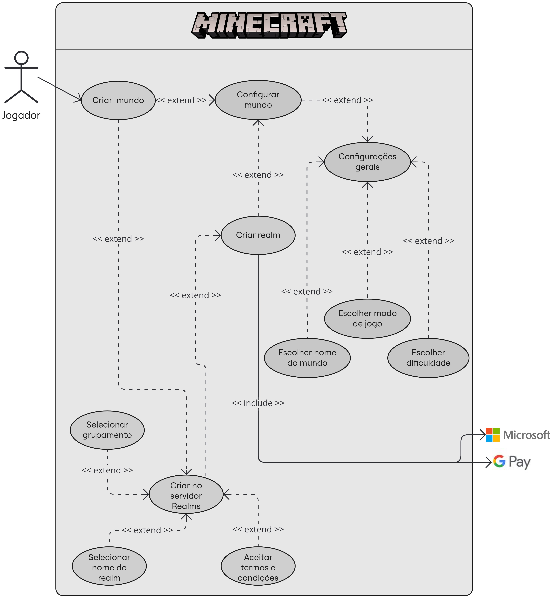

Casos de uso
Histórico de Revisão
| Data | Versão | Descrição | Autor(es) |
|---|---|---|---|
| 18/08/2024 | 0.1 | Criação do documento inicial com diagrama e tabelas da especificação suplementar | Carlos Eduardo |
| 19/08/2024 | 0.2 | Linkagens com os termos do léxico | Carlos Eduardo |
| 20/08/2024 | 0.3 | Adição do diagrama de criação de mundos e realms | Carlos Eduardo |
Introdução
Este documento contém a especificação dos casos de uso, onde o principal objetivo é detalhar as interações entre os usuários e o sistema, uma das melhores formas para a elicitação dos requisitos funcionais.
Diagramas dos Casos de Uso
Caso de uso geral

Versão 1 - Autor: Carlos Eduardo
Criação de mundos e realms

Versão 1 - Autor: Carlos Eduardo
Especificação do caso de uso
UC01 Criar mundo
| Criar mundo | |
|---|---|
| Descrição: | Criar um novo mundo no Minecraft. |
| Ator(es): | Usuário |
| Pré-Requisitos: | Usuário deve estar no menu principal do jogo. |
| Fluxo Principal: | 1. Usuário acessa o menu "Criar Mundo". 2. Usuário configura as opções desejadas para o mundo (nome, tipo de mundo, etc.). 3. Usuário confirma a criação do mundo. |
| Fluxo Alternativo: | 1. Usuário decide cancelar a criação do mundo antes de confirmar. 2. Usuário retorna ao menu principal. |
| Fluxo de Exceção: | 1. Ocorre um erro durante a criação do mundo. 2. Usuário recebe uma mensagem de erro e é redirecionado ao menu principal. |
| Pós-condições: | Um novo mundo é criado e carregado para o usuário explorar. |
UC02 Selecionar modo de jogo e dificuldade
| Selecionar modo de jogo e dificuldade | |
|---|---|
| Descrição: | Selecionar o modo de jogo e a dificuldade para o mundo. |
| Ator(es): | Usuário |
| Pré-Requisitos: | Usuário deve estar no menu de criação ou edição de um mundo. |
| Fluxo Principal: | 1. Usuário acessa as configurações de modo de jogo e dificuldade. 2. Usuário seleciona o modo de jogo desejado (Sobrevivência, Criativo, Aventura, Espectador, Hardcore). 3. Usuário escolhe o nível de dificuldade (Fácil, Médio, Difícil...). |
| Fluxo Alternativo: | 1. Usuário decide manter as configurações padrão. |
| Fluxo de Exceção: | 1. Erro ao salvar as configurações. 2. Usuário é notificado e tenta novamente. |
| Pós-condições: | Configurações de modo de jogo e dificuldade aplicadas ao mundo. |
UC03 Carregar mundo
| Carregar mundo | |
|---|---|
| Descrição: | Carregar um mundo existente. |
| Ator(es): | Usuário |
| Pré-Requisitos: | Usuário deve estar no menu principal do jogo. |
| Fluxo Principal: | 1. Usuário acessa a lista de mundos salvos. 2. Usuário seleciona o mundo desejado. 3. Mundo é carregado e o jogador pode jogar. |
| Fluxo Alternativo: | 1. Usuário decide não carregar nenhum mundo e retorna ao menu principal. |
| Fluxo de Exceção: | 1. Ocorre um erro ao carregar o mundo. 2. Usuário é notificado e redirecionado ao menu principal. |
| Pós-condições: | Mundo existente é carregado para o jogador. |
UC04 Explorar mundo
| Explorar mundo | |
|---|---|
| Descrição: | Explorar o mundo do Minecraft. |
| Ator(es): | Usuário |
| Pré-Requisitos: | Mundo deve estar carregado e pronto para exploração. |
| Fluxo Principal: | 1. Usuário move o personagem pelo mundo. 2. Usuário interage com o ambiente. 3. Usuário coleta recursos ou enfrenta inimigos. |
| Fluxo Alternativo: | 1. Usuário decide construir ou modificar o ambiente durante a exploração. |
| Fluxo de Exceção: | 1. Ocorre um erro no jogo durante a exploração. 2. Usuário é notificado e o jogo pode reiniciar. |
| Pós-condições: | O mundo é explorado. |
UC05 Combater inimigos
| Combater inimigos | |
|---|---|
| Descrição: | Combater inimigos no jogo. |
| Ator(es): | Usuário |
| Pré-Requisitos: | Usuário deve estar em modo de sobrevivência ou similar. |
| Fluxo Principal: | 1. Usuário encontra inimigos durante a exploração. 2. Usuário usa armas ou ferramentas para atacar os inimigos. 3. Inimigos são derrotados ou o jogador é derrotado. |
| Fluxo Alternativo: | 1. Usuário decide evitar o combate e foge ou se esconde dos inimigos. |
| Fluxo de Exceção: | 1. Jogo trava durante o combate. 2. O jogo é reiniciado. |
| Pós-condições: | Inimigos derrotados ou jogador recomeça após a derrota. |
UC06 Proteger território
| Proteger território | |
|---|---|
| Descrição: | Proteger o território no jogo. |
| Ator(es): | Usuário |
| Pré-Requisitos: | Usuário deve ter estabelecido uma base ou local de interesse. |
| Fluxo Principal: | 1. Usuário constrói defesas ao redor do território. 2. Usuário protege o território de ataques inimigos. 3. Território permanece seguro ou é invadido. |
| Fluxo Alternativo: | 1. Usuário decide abandonar o território e mudar para um novo local. |
| Fluxo de Exceção: | 1. Defesas falham e território é invadido. 2. Usuário deve reconstruir sua base ou procurar outro local. |
| Pós-condições: | Território protegido, abandonado ou há a necessidade de reconstrução. |
UC07 Construir blocos
| Construir blocos | |
|---|---|
| Descrição: | Construir blocos no jogo. |
| Ator(es): | Usuário |
| Pré-Requisitos: | Usuário deve possuir blocos no inventário. |
| Fluxo Principal: | 1. Usuário seleciona os blocos no inventário. 2. Usuário posiciona os blocos no mundo conforme desejado. 3. Construção é realizada. |
| Fluxo Alternativo: | 1. Usuário decide não construir o bloco. |
| Fluxo de Exceção: | 1. Ocorre um erro ao posicionar os blocos. 2. Usuário tenta novamente ou usa outro tipo de bloco. |
| Pós-condições: | Blocos construídos. |
UC08 Quebrar blocos
| Quebrar blocos | |
|---|---|
| Descrição: | Quebrar blocos no jogo. |
| Ator(es): | Usuário |
| Pré-Requisitos: | Usuário deve estar equipado com uma ferramenta ou à mão livre. |
| Fluxo Principal: | 1. Usuário seleciona o bloco que deseja quebrar. 2. Usuário utiliza a ferramenta adequada ou à mão livre para quebrar o bloco. 3. Bloco é quebrado e, se for possível, coletado para o inventário. |
| Fluxo Alternativo: | 1. Usuário decide não coletar o bloco quebrado e o deixa no chão. |
| Fluxo de Exceção: | 1. Bloco não pode ser quebrado por estar protegido ou ser indestrutível. 2. Usuário desiste de quebrar o bloco ou procura outra ferramenta. |
| Pós-condições: | Bloco é quebrado ou permanece intacto. |
UC09 Coletar recursos
| Coletar recursos | |
|---|---|
| Descrição: | Coletar recursos no jogo. |
| Ator(es): | Usuário |
| Pré-Requisitos: | Usuário deve explorar o mundo. |
| Fluxo Principal: | 1. Usuário encontra recursos durante a exploração. 2. Usuário utiliza ferramentas ou à mão livre para coletar os recursos. 3. Recursos são adicionados ao inventário. |
| Fluxo Alternativo: | 1. Usuário decide não coletar os recursos e continua a exploração. |
| Fluxo de Exceção: | 1. Recursos são destruídos acidentalmente durante a coleta. 2. Usuário procura por mais recursos no mundo. |
| Pós-condições: | Recursos coletados e armazenados no inventário. |
UC10 Adicionar e gerenciar amigos
| Adicionar e gerenciar amigos | |
|---|---|
| Descrição: | Adicionar e gerenciar amigos no jogo. |
| Ator(es): | Usuário |
| Pré-Requisitos: | Usuário deve estar conectado a uma rede e ter uma conta microsoft. |
| Fluxo Principal: | 1. Usuário acessa a lista de amigos. 2. Usuário adiciona novos amigos ou gerencia os existentes. 3. Amizades são atualizadas junto ao servidor do jogo. |
| Fluxo Alternativo: | 1. Usuário decide remover ou bloquear um amigo da lista. |
| Fluxo de Exceção: | 1. Erro ao atualizar a lista de amigos. 2. Usuário tenta novamente ou entra em contato com o suporte. |
| Pós-condições: | Amigos adicionados ou lista de amigos gerenciada. |
UC11 Criar Itens
| Criar Itens | |
|---|---|
| Descrição: | Criar itens no jogo usando recursos coletados. |
| Ator(es): | Usuário |
| Pré-Requisitos: | Usuário deve possuir os recursos necessários no inventário. |
| Fluxo Principal: | 1. Usuário acessa a mesa de trabalho ou o menu de criação. 2. Usuário seleciona o item a ser criado. 3. Item é criado e adicionado ao inventário. |
| Fluxo Alternativo: | 1. Usuário decide não criar o item e fecha o menu de criação. |
| Fluxo de Exceção: | 1. Recursos insuficientes para criar o item. 2. Usuário coleta mais recursos e tenta novamente. |
| Pós-condições: | Item criado e adicionado ao inventário do usuário. |
UC12 Jogar no modo multiplayer
| Jogar no modo multiplayer | |
|---|---|
| Descrição: | Jogar no modo multiplayer com outros usuários. |
| Ator(es): | Usuário |
| Pré-Requisitos: | Usuário deve estar conectado à internet e ter uma conta no Minecraft. |
| Fluxo Principal: | 1. Usuário acessa o menu multiplayer. 2. Usuário escolhe um servidor ou insere o IP de um servidor específico. 3. Usuário conecta-se ao servidor e começa a jogar com outros jogadores. |
| Fluxo Alternativo: | 1. Usuário decide jogar em modo singleplayer e retorna ao menu principal. |
| Fluxo de Exceção: | 1. Erro de conexão com o servidor. 2. Usuário tenta conectar novamente ou escolhe outro servidor. |
| Pós-condições: | Usuário conectado ao servidor e jogando com outros jogadores. |
UC13 Entrar ou criar conta
| Entrar ou criar conta | |
|---|---|
| Descrição: | Entrar ou criar uma conta no Minecraft. |
| Ator(es): | Usuário |
| Pré-Requisitos: | Usuário deve ter acesso à internet. |
| Fluxo Principal: | 1. Usuário acessa o menu de login. 2. Usuário acessa a página de login da microsoft e insere as credenciais ou cria uma nova conta. 3. Usuário é autenticado e pode acessar o jogo. |
| Fluxo Alternativo: | 1. Usuário decide jogar sem se conectar a sua conta |
| Fluxo de Exceção: | 1. Erro ao criar ou entrar na conta. 2. Usuário verifica as credenciais e tenta novamente. |
| Pós-condições: | Usuário autenticado. |
UC14 Conectar ou adicionar um servidor
| Conectar ou adicionar um servidor | |
|---|---|
| Descrição: | Conectar-se a um servidor existente ou adicionar um novo. |
| Ator(es): | Usuário |
| Pré-Requisitos: | Usuário deve estar conectado à internet. |
| Fluxo Principal: | 1. Usuário acessa o menu de servidores. 2. Usuário seleciona um servidor existente ou insere o IP de um novo servidor. 3. Usuário conecta-se ao servidor escolhido. |
| Fluxo Alternativo: | 1. Usuário decide não se conectar a nenhum servidor e retorna ao menu principal. |
| Fluxo de Exceção: | 1. Erro ao conectar-se ao servidor. 2. Usuário tenta novamente ou escolhe outro servidor. |
| Pós-condições: | Usuário conectado ao servidor. |
UC15 Sair do jogo
| Sair do jogo | |
|---|---|
| Descrição: | Sair do jogo e retornar ao sistema operacional. |
| Ator(es): | Usuário |
| Pré-Requisitos: | Jogo deve estar em execução. |
| Fluxo Principal: | 1. Usuário acessa o menu de pausa ou o principal. 2. Usuário seleciona a opção de sair do jogo. 3. Jogo é fechado e usuário retorna ao SO. |
| Fluxo Alternativo: | 1. Usuário decide continuar jogando e fecha o menu. |
| Fluxo de Exceção: | 1. Jogo trava ao tentar sair. 2. Usuário força o fechamento do jogo via sistema operacional. |
| Pós-condições: | Jogo fechado e retorno ao sistema operacional. |
UC16 Salvar mundo
| Salvar mundo | |
|---|---|
| Descrição: | Salvar o progresso do mundo em que está jogando. |
| Ator(es): | Usuário |
| Pré-Requisitos: | Usuário deve estar jogando em um mundo. |
| Fluxo Principal: | 1. Usuário acessa o menu de pausa. 2. Usuário seleciona a opção de salvar. 3. Progresso do mundo é salvo. |
| Fluxo Alternativo: | 1. Usuário decide não salvar e continua jogando. |
| Fluxo de Exceção: | 1. Erro ao salvar o mundo. 2. Usuário tenta novamente ou verifica espaço disponível. |
| Pós-condições: | mundo salvo e progresso garantido. |
UC17 Configurações gerais
| Configurações gerais | |
|---|---|
| Descrição: | Permite ao jogador ajustar configurações gerais do mundo, como modo de jogo e dificuldade. |
| Ator(es): | Jogador |
| Pré-Requisitos: | O jogador deve estar na tela de configuração do mundo. |
| Fluxo Principal: | 1. O jogador acessa a seção de configurações gerais. 2. O jogador ajusta as opções de modo de jogo e dificuldade. 3. O jogador confirma as configurações e prossegue para a próxima etapa. |
| Fluxo Alternativo: | 1. O jogador decide manter as configurações padrão. 2. O jogador confirma as configurações e prossegue para a próxima etapa. |
| Fluxo de Exceção: | 1. Falha ao aplicar as configurações. 2. O jogo solicita que o jogador ajuste as configurações novamente. |
| Pós-condições: | As configurações gerais são aplicadas e o jogador pode continuar a configuração do mundo. |
UC18 Criar no servidor Realms
| Criar no servidor Realms | |
|---|---|
| Descrição: | Permite ao jogador criar um mundo no servidor Realms. |
| Ator(es): | Jogador |
| Pré-Requisitos: | O jogador deve estar logado em sua conta da Microsoft e ter uma assinatura ativa do Realms. |
| Fluxo Principal: | 1. O jogador seleciona a opção para criar no servidor Realms. 2. O jogador escolhe um nome e configuracões para o Realms. 3. O jogador confirma e o mundo é criado no servidor Realms. |
| Fluxo Alternativo: | 1. O jogador decide criar o mundo localmente em vez de usar o Realms. 2. O jogador retorna à opção de criação de mundo local. |
| Fluxo de Exceção: | 1. Falha ao conectar ao servidor Realms. 2. O jogo notifica o jogador e permite tentar novamente ou retornar ao menu principal. |
| Pós-condições: | O mundo é criado no servidor Realms e fica disponível para o jogador e seus amigos convidados. |
UC19 Selecionar grupamento
| Selecionar grupamento | |
|---|---|
| Descrição: | Permite ao jogador escolher a quantidade de jogadores que poderão jogar simultaneamente no servidor Realms (2 ou 10). |
| Ator(es): | Jogador |
| Pré-Requisitos: | O jogador deve estar na etapa de criação no servidor Realms. |
| Fluxo Principal: | 1. O jogador acessa a opção de seleção de grupamento. 2. O jogador escolhe entre as opções de 2 ou 10 jogadores. 3. O jogador confirma a escolha e prossegue com a criação. |
| Fluxo Alternativo: | 1. O jogador é direcionado à escolha padrão ou retorna à tela anterior. |
| Fluxo de Exceção: | 1. O jogador encontra problemas ao selecionar o grupamento. 2. O jogo notifica o jogador para tentar novamente ou escolher outra opção. |
| Pós-condições: | O grupamento é selecionado, permitindo a criação do mundo com o número especificado de jogadores simultâneos. |
UC20 Selecionar nome do realm
| Selecionar nome do realm | |
|---|---|
| Descrição: | Permite ao jogador escolher o nome do Realm onde o mundo será criado. |
| Ator(es): | Jogador |
| Pré-Requisitos: | O jogador deve estar na etapa de criação do mundo no Realms. O jogador deve estar conectado à internet. |
| Fluxo Principal: | 1. O jogador acessa a opção para nomear o Realm. 2. O jogador digita o nome desejado. 3. O jogador confirma o nome e prossegue com a criação do mundo. |
| Fluxo Alternativo: | 1. O jogador decide utilizar um nome sugerido automaticamente pelo jogo. 2. O jogador confirma o nome sugerido e prossegue. |
| Fluxo de Exceção: | 1. O nome escolhido já está em uso ou é inválido. 2. O jogo solicita que o jogador escolha outro nome. |
| Pós-condições: | O nome do Realm é registrado e o jogador pode continuar com a criação do mundo. |
UC21 Aceitar termos e condições realms
| Aceitar termos e condições realms | |
|---|---|
| Descrição: | Requer que o jogador aceite os termos e condições para utilizar o servidor Realms. |
| Ator(es): | Jogador |
| Pré-Requisitos: | O jogador deve estar na etapa de criação do mundo no Realms. O jogador deve estar conectado à internet. |
| Fluxo Principal: | 1. O jogador é apresentado aos termos e condições. 2. O jogador lê e aceita os termos e condições. 3. O jogador prossegue com a criação do servidor realms. |
| Fluxo Alternativo: | 1. O jogador decide não aceitar os termos e condições. 2. O jogador é impedido de prosseguir com a criação do mundo no Realms. |
| Fluxo de Exceção: | 1. Falha ao registrar a aceitação dos termos e condições. 2. O jogo solicita que o jogador tente aceitar os termos novamente. |
| Pós-condições: | Os termos e condições são aceitos e o jogador pode continuar a criação do mundo no Realms. |